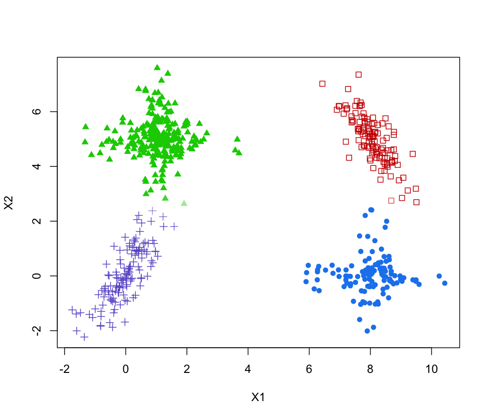

Optimal number of clusters obtained by combining mixture components
clustCombiOptim.RdReturn the optimal number of clusters by combining mixture components based on the entropy method discussed in the reference given below.
Arguments
- object
An object of class
'clustCombi'resulting from a call toclustCombi.- reg
The number of parts of the piecewise linear regression for the entropy plots. Choose 2 for a two-segment piecewise linear regression model (i.e. 1 change-point), and 3 for a three-segment piecewise linear regression model (i.e. 3 change-points).
- plot
Logical, if
TRUEan entropy plot is also produced.- ...
Further arguments passed to or from other methods.
Value
The function returns a list with the following components:
- numClusters.combi
The estimated number of clusters.
- z.combi
A matrix whose [i,k]th entry is the probability that observation i in the data belongs to the kth cluster.
- cluster.combi
The clustering labels.
References
J.-P. Baudry, A. E. Raftery, G. Celeux, K. Lo and R. Gottardo (2010). Combining mixture components for clustering. Journal of Computational and Graphical Statistics, 19(2):332-353.
Examples
data(Baudry_etal_2010_JCGS_examples)
output <- clustCombi(data = ex4.1)
combiOptim <- clustCombiOptim(output)
str(combiOptim)
#> List of 3
#> $ numClusters.combi: int 4
#> $ z.combi : num [1:600, 1:4] 1.00 1.00 5.78e-04 1.85e-42 3.85e-35 ...
#> $ cluster.combi : num [1:600] 1 1 2 3 3 4 4 3 3 2 ...
# plot optimal clustering with alpha color transparency proportional to uncertainty
zmax <- apply(combiOptim$z.combi, 1, max)
col <- mclust.options("classPlotColors")[combiOptim$cluster.combi]
vadjustcolor <- Vectorize(adjustcolor)
alphacol = (zmax - 1/combiOptim$numClusters.combi)/(1-1/combiOptim$numClusters.combi)
col <- vadjustcolor(col, alpha.f = alphacol)
plot(ex4.1, col = col, pch = mclust.options("classPlotSymbols")[combiOptim$cluster.combi])
